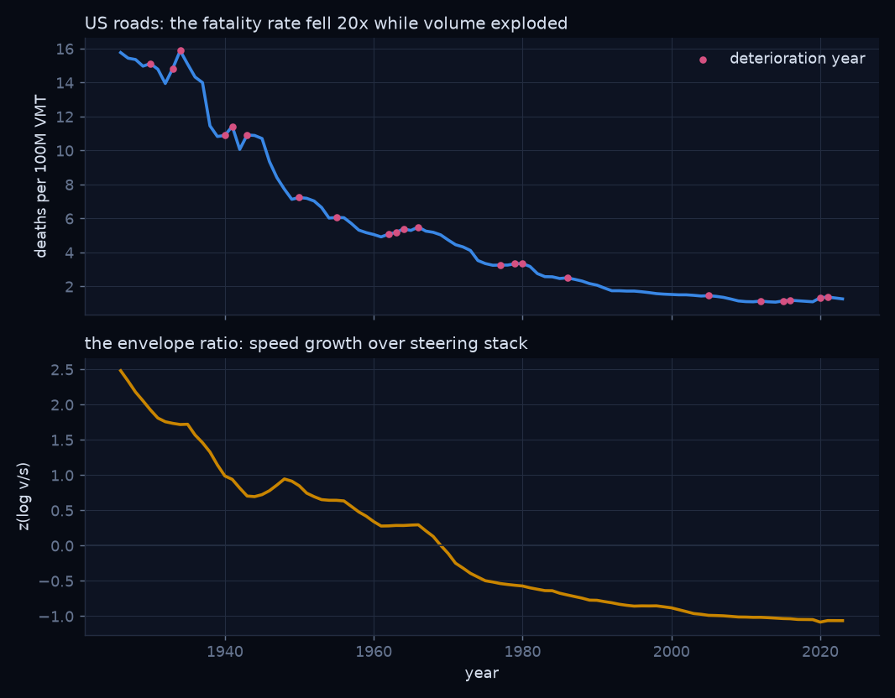
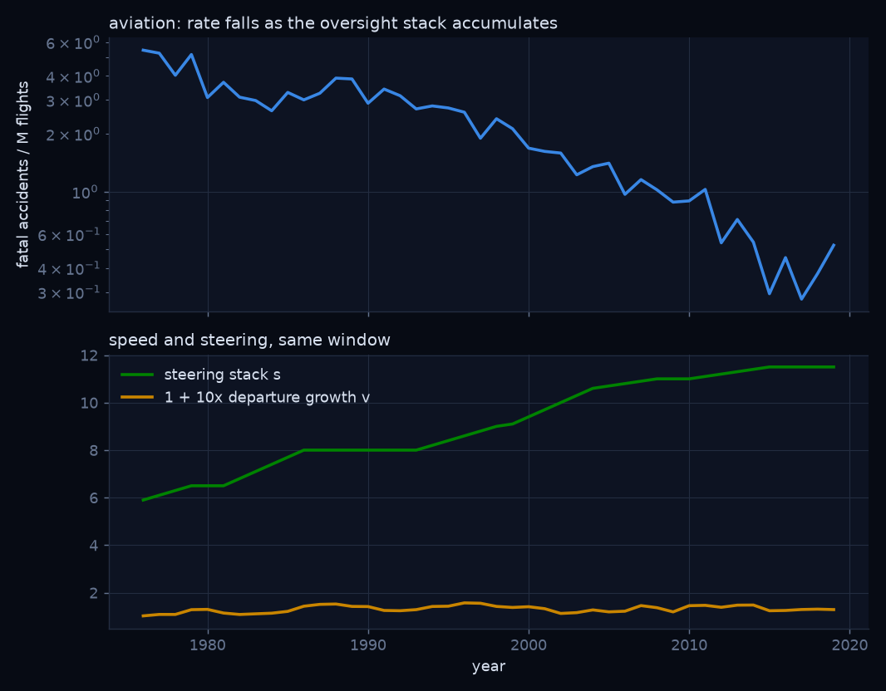
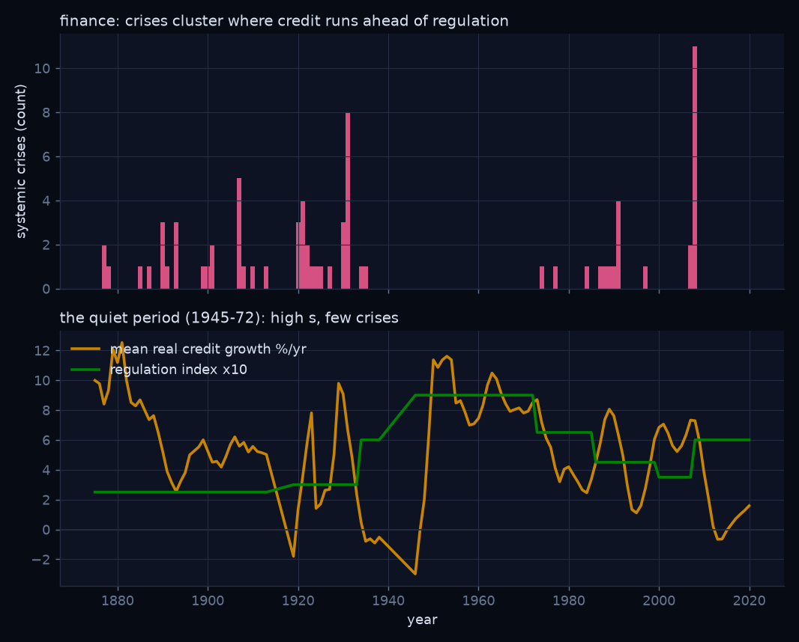
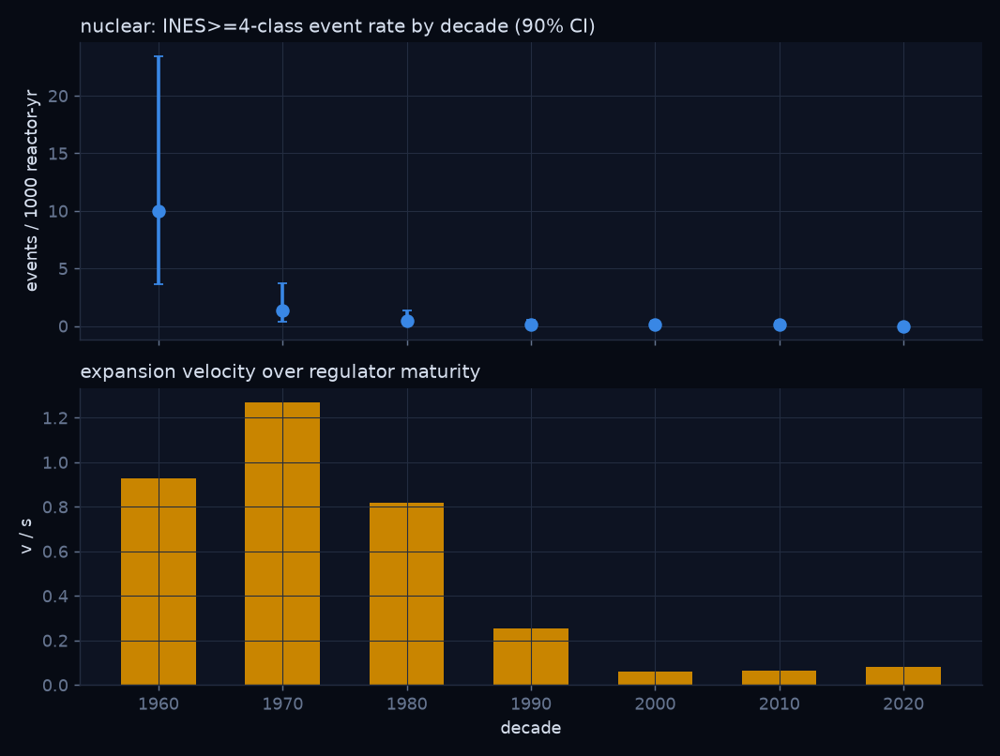
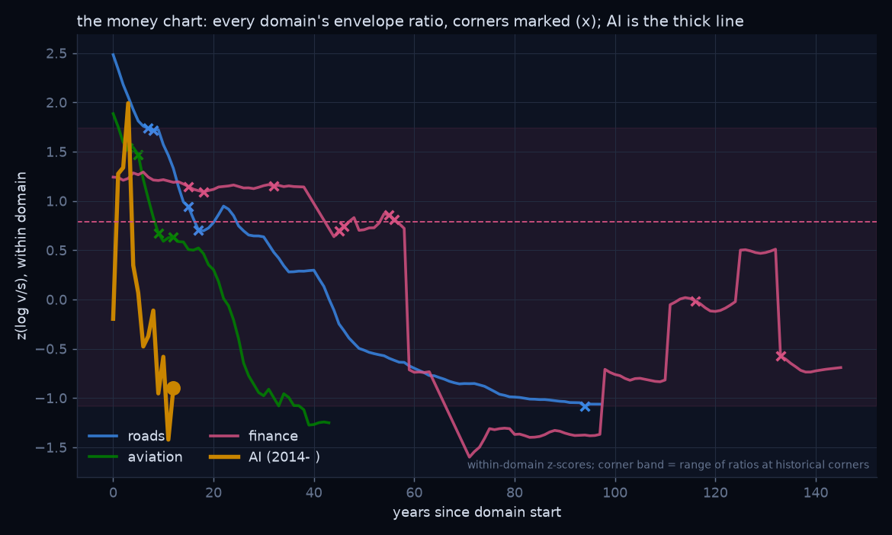

Psychohistory's first module about acting, not just watching. One new axiom, borrowed from cybernetics: only variety can absorb variety. Two premises the program already holds. And out of them, a survival theorem that runs from the first campfire to the Bronze Age pileup to the IAEA to frontier AI, tested on a century of public data.
Seldon's fictional science had two premises: enough people, and laws that hold whether or not any one of them believes. The real, bounded version built in this repository has spent its first years on the passive side of that idea: conservation of attention, community blocks, criticality, the collapse of effective independence before a cascade. All of it watches.
This module is the first one about acting, and it adds exactly one new axiom to the program. The axiom is not about society at all. It is about control, and it was written down by Ross Ashby in 1956.
That is the whole new primitive. Our hazard law is just its smooth form: novelty injected by a technology, v times k, against the regulatory variety a society commands, s.
Everything else this module needs, the program already holds. From the criticality layer, accumulation: stress that is neither absorbed nor released does not vanish, it stores, grain by grain, the way a sandpile stores its avalanche. From the mean-field layer, plurality: no actor's throttle sets the world's speed; the field's speed is a reflexive equilibrium of everyone's expectations about everyone else.
From those three, one axiom and two standing premises, the claim this module exists to test follows as a theorem.
The proof is three sentences. Exceed the grip and you crash now; that is the Control Axiom read directly. Park, and three things happen at once: the field keeps moving, so the transition arrives on someone else's terms; your grip stagnates, because steering is partly learning-by-doing and you cannot learn a corner you refuse to drive; and the suppressed corrections store. So when the corner finally reaches you it is tighter, you are weaker, and the stored stress is larger: you crash later and harder, or you ride shotgun. Therefore the surviving policy is the racing line, speed bounded by grip, and nothing else is stable.
I am stating all of this with conviction, not with a shrug. Most theories worth having were postulated long before they were proved, and the way you earn the proof is by writing the claim down plainly, building the instrument, and letting every new episode of history score it. That is what this module does. Time will tell. We wrote it down first.
Strip away everything modern and the theorem is already there at the first campfire.
A tribe discovers fire. What are its choices? It can keep the secret, post guards around the hearth, and enjoy an advantage until the night a rival steals an ember or the keeper of the flame dies with the trick. It can sell the secret, trade fire for food, for alliance, for marriage, which means the secret moves, but slowly, along the channels of who can pay. Or it can teach the secret, and then fire is simply something humans have, and no tribe can hold another hostage with it, and every hearth in the valley now needs the same thing: rules. Keep it off the dry grass. Bank it at night. Watch the children.
Notice what just happened. The three choices are the three acceleration mechanisms the modern discourse thinks it invented. Hoard the capability. Gate and sell the capability. Share the capability. And notice the fourth thing, the one that appears in every branch: the rules of the hearth. The firebreak. The watcher. That is steering capacity, and it is the only part of the story that decides whether the valley burns.
So when I write v, speed, I do not just mean how fast the frontier moves. I mean how capability moves through the network of tribes: hoarded, sold, or shared. And when I write s, steering, I mean the accumulated stock of hearth rules: verification, licensure, inspectorates, incident channels, institutions that can absorb a shock. The theorem says survival is decided by the ratio of the two.
History keeps ending transitions in the same small set of ways. The model names six, and each one has a face. Which state you get is not destiny and it is not luck. That is the theorem's whole content: the state is selected by the ratio of speed to steering at the corners.
| state | what it means | the historical face |
|---|---|---|
| ARRIVED | You cross the transition first, intact, and set its terms. | Britain and the railway age: first across, wrote the gauge, the law, the timetable of the industrial world. |
| CONVOY | The transition arrives as a pack because knowledge was shared or standardized until nobody held a decisive edge. The highest-yield state history offers: the gains without the wreck. | Rail gauge standardization. Open protocols. FOSS, which is the deliberate breaking of the hoard. Once everyone knows the secret of fire, nobody has an advantage, and everybody has fire. |
| SHOTGUN | Someone else crosses first and you live in the world they chose. | Tokugawa Japan, two centuries out of the industrial transition, until Perry's black ships set the terms. |
| HELD | Nobody crosses; the transition is refused or deferred. Rare, temporary, and paid for in everything the transition would have bought. | Isolation edicts, sea bans, indefinite moratoria. |
| CRASHED | You take a corner beyond your control authority and lose the machine. | Chernobyl: a program that outran its own safety culture, a test run at night against the manual, a state that lost far more than a reactor. |
| PILEUP | The coupled crash: everyone goes down together because everyone was leaning on everyone. | The Late Bronze Age: a dozen interlocked palace economies, each hoarding its advantages, none able to stand alone; within a lifetime nearly every palace from Pylos to Ugarit was ash, and Greece lost writing for four centuries. Rebuilt in 2008 with balance sheets instead of bronze. |
Now the equation, and it is deliberately small. When a transition hits a corner, a critical threshold where control is actually contested, the probability you lose the machine is logistic in speed times corner tightness over steering capacity:
Inside the envelope, v times k below s, hazard is low. Outside it, hazard saturates. The edge is ratio one. Corner tightness k is how unforgiving this particular transition is: a tighter corner for nuclear material than for spreadsheets, tighter for autonomous weapons than for chess engines.
Too simple? So is F equals ma. Simple is what lets the data vote.
Once you see steering as a real quantity, you start recognizing the machinery every era built to supply it. Each mechanism is a different setting of the dials, and history has run them all.
| mechanism | what it does to the dials | the record |
|---|---|---|
| Secrecy / the NDA | buys a private speed edge; makes the formation brittle (hoarded knowledge dies with its keepers) | The guarded hearth. The Bronze Age palaces ran this setting into the pileup. |
| The patent | a timed gate: sell the secret of fire, but the price is publication and the monopoly expires | Compounding disclosure instead of hereditary guild secrets. A throttled convoy. |
| The conscience endowment | converts private speed into public grip, retroactively | Nobel's explosives fortune, endowed into an institution that redirects ambition toward shared knowledge. |
| Licensure / apprenticeship | gates knowledge by time and demonstrated competence, not price | Medicine, flight, and, when we still bothered, finance. Steering disguised as a career path. |
| Treaty + inspectorate | the coordination dial in institutional form: caps the reckless tail of the whole field | The IAEA. After 1945 the powers looked at the tightest corner ever discovered and built an agency to keep wayward drivers from taking it alone. |
| The commons | maximum sharing; erases decisive edges, puts every eye on the same code | FOSS, open protocols, open science. A coordination mechanism wearing an anarchist jacket. |
| No mechanism (control group) | coordination pinned to zero by design | Crypto: perpetual small crashes, NFT manias, rug pulls, exchange pileups, extraordinary innovation and no floor under anyone. Exactly what the model says an uncoordinated field looks like. |
Here is the misreading I most want to kill, because it is the one governments commit.
Steering does not mean preventing every crash. A hand that only ever brakes is not steering, it is storing the crash. Suppress every small correction, guarantee every bank, refuse every recession, and you do not delete the energy, you bank it in the fuel tank for a bigger corner. Finance shows both failure modes side by side. Repeal Glass-Steagall, remove grip while credit accelerates, and you get 2008. But equally, administrations that lean on the central bank to abolish every downturn are not steering either. They are welding the brake pedal to the floor of the future, moving the crash later and amplifying it. The Minsky reading and the forest-fire reading are the same reading: small fires clear the underbrush.
The theorem is symmetric and I mean it symmetrically, because the proof is: suppression fails through the same three premises. Uncontrolled acceleration crashes now. Enforced deceleration and suppression crash later, bigger. The surviving policy is the racing line: constant sustainable speed, deceleration into the corners, acceleration out of them. In the instrument this is exactly why the HELD state loses and why the s/acc preset brakes early and then runs fast on accumulated grip.
A theory of steering should be able to walk back through history and label the episodes. Here is the opening of that catalog.
| episode | mechanism in force | state selected |
|---|---|---|
| Late Bronze Age collapse | hoarding under tight coupling | PILEUP |
| Golden age of piracy → navies | an ungoverned commons, then states buying grip (navies, admiralty law); the corner never closed, which is why one strait off Iran can still put the world economy on notice | corner brought inside the envelope |
| Railway gauge standardization | forced knowledge sharing | CONVOY |
| Nuclear + IAEA | treaty with an inspectorate | the tightest corner, taken slowly, in formation; the worst-case tail so far held by treaty |
| Nobel prize; patent system | conversion mechanisms: private speed into public grip | throttled convoy |
| The socialist experiments | enforced deceleration of the market transition | crashed, opened, or converged back to market speed under party grip; China's hybrid housing market is re-steering mid-corner |
| Crypto, 2009– | none, by design | the running control group: rolling crashes, no floor |
| GameStop, January 2021 | contested steering: funds steering a firm toward bankruptcy, a crowd counter-steering | the attempted crash failed; legible in advance to anyone reading the ratio, and one retail analyst famously did |
| Glass-Steagall repeal → 2008 | grip removed while speed rose | PILEUP |
| Motorways with and without speed limits | the literal experiment, published crash data | queued as the next domain study |
The world is steered, constantly, by people who believe they can shape which future arrives. The only question the theorem asks is whether the steering is matched to the speed.
Rehypothesis is cheap; fits are not. So we ran the theorem against five domains of public data, windows and losing conditions frozen in the README before the run.
Roads, the literal case. America multiplied its driven miles a hundredfold while deaths per mile fell twenty-fold, tracking the steering stack: licensing, the 1966 safety acts, belts, the 0.08 limit. In the strict first-difference test both terms carry independent signal: speed changes matter (p = 0.016) and steering changes matter (p = 0.045). The ratio is not decoration on the road that named the theory.

Aviation does something subtler than agree. It is the domain with the most control in it, full stop: every airframe certified before it flies, every pilot licensed by hours, every procedure written in someone's blood, ICAO to CRM to TCAS. And it bought the safest transition on record with that stack, a roughly hundredfold collapse in fatal accidents per million flights. Maximum regulation, fewest accidents. The statistical wrinkle: the oversight stack explains the collapse so completely that speed adds nothing measurable once you control for it (differenced p = 0.59), and the frozen scoreboard logs that as a miss, because a wager that explains away its own misses is not a wager.
But say what aviation actually is: the one domain that adopted the envelope rule outright. Certification is a throttle bounded by grip; nothing new flies until the regulator's capacity to verify it has caught up. Friedman had a name for this pattern: the thermostat. In a well-run house the fuel burned tracks the weather and the room temperature correlates with nothing, precisely because the controller is absorbing the disturbance. A domain that obeys "never faster than your grip" will, by construction, show disasters tracking only residual steering variation. Aviation does not dissent from the theorem. It complies with it so thoroughly that the speed signal was steered out of the data. And the reading earns its keep by predicting something checkable: domains with an institutional speed governor should show no speed signal, and domains without one should. Aviation, governed throttle: no v-signal. Roads and credit, ungoverned throttle: v-signal in both. Three for three, and the prediction stands for every domain we add next.

Finance, the flagship: 18 countries, 145 years, 75 dated systemic crises in the Jorda-Schularick-Taylor panel. Credit growth is speed; an era-coded regulation index is grip. The famous credit-boom result reproduces first. Then the addition: the steering term improves the fit at odds of billions to one, and the single best out-of-sample predictor, holding out whole decades, is the ratio v/s (AUC 0.688 against 0.506 for credit alone). The quiet period, 1945 to 1972, fast growth under heavy grip and nearly zero crises anywhere in the panel, sits in the data like a signed confession.

Nuclear is too small to fit, and we refuse to pretend otherwise: seven decades, ten INES-4-class events. As a case study it is consistent: thirteen times the event rate per reactor-year in the fast-build, young-regulator decades, rank correlation 0.82 between v/s and the event rate.

And AI. No outcome data exists for AI corners, so we publish the leading indicator instead of inventing one. AI's envelope ratio spiked above the band where every historical domain's corners bit, around 2015. On crude public proxies it has come down since, because policy counts and eval institutions grew faster than frontier compute. Do not relax: a policy count is not grip any more than a printed rulebook is a driver. The chart says the world is trying. It does not say the world is steering.

| domain | sharpest test | does s add power over v? | does v add power over s? | verdict for the theorem |
|---|---|---|---|---|
| roads (US) | first differences | yes, p=0.045 | yes, p=0.016 | holds |
| aviation (world) | first differences | no, p=0.59 | marginal | the thermostat case: logged as a miss; reads as the deepest compliance (envelope rule adopted outright, v-signal steered out of the data) |
| finance (JST panel) | panel logit, decade holdout | yes, p≈4e-9 | yes, p=0.008 | holds, out-of-sample |
| nuclear | case study only | no fit by pre-registration | consistent | |
| AI | leading indicators | no outcome data exists | watch the ratio | |
Three of four finished domains hold the theorem outright. The fourth, aviation, is the thermostat case: a technical miss under the frozen rules, and underneath the miss, the deepest compliance in the record. The flagship holds it out-of-sample, which is the test that matters. That is what a young law is supposed to look like when it is right: scarred, not spotless.
The deepest result in the module is not about any single driver. Replace the rival with a field of sixteen drivers drawing their throttle from a distribution, couple crashes to their neighbours, and ask: what buys an already-careful driver more survival, another unit of private caution or another unit of field-wide coordination? On every tested point of the diligent regime, coordination wins, nine gridpoints out of nine. And in the household layer, where every outcome becomes hours of work per week for food, shelter and energy across eight very different tribes, the same truth lands harder: with coordination live, the steering policy wins every tribe's worst decade that it does not tie. With coordination forced to zero, every single row ties. Your private virtue keeps your lane. Only coordination reaches anyone's kitchen. Verify it yourself with the honesty toggle.
This is the psychohistory of it. The race is a mean-field game, the same L5 mathematics this repository uses for bank runs. Everyone racing because everyone expects a race is a self-consistent equilibrium. So is a held norm. The coordination dial is the order parameter that selects between them, and treaties, standards bodies, inspectorates and commons are how civilizations have always moved it.
A theorem stated with conviction still names the terms on which its premises lose. Ours are frozen in the repository: if the steering term had added nothing beyond speed across the fittable record, the Control Axiom would be empirically idle here and the theorem would be decoration, and we said so before running. It survived. Going forward the catalog only grows: every new transition, every natural experiment, every autobahn table and strait blockade and model release is another scoring event. Theories are often proved years after they are postulated. The postulate is now on the record, timestamped, with its instrument public and its data fetchable by anyone.
If you build: publish your envelope. Your corner list, your grip metrics, and the rule that connects them. "We slow when X" is a falsifiable safety culture. Vibes are not.
If you govern: fund grip, not just brakes, and never confuse suppression with steering. The quiet period grew fast with its hands on the wheel. The administrations that abolish every small correction are buying the big one.
If you argue: stop scoring this debate as gas against brakes. The axis that predicts the record is grip against speed. Ask every accelerationist where the steering is. Ask every stopper whose hands they are leaving on the wheel.
The engine is real. The corners are real. A century of data says the ratio decides. Drive fast. Never faster than you can steer.
Wingston Sharon, 2026 · the psychohistory program's control axiom and survival theorem · markdown source: steering_envelope/page.md · dataset licenses in curated/README.md · drive the instrument · this page inherits the repository's dual-use notice